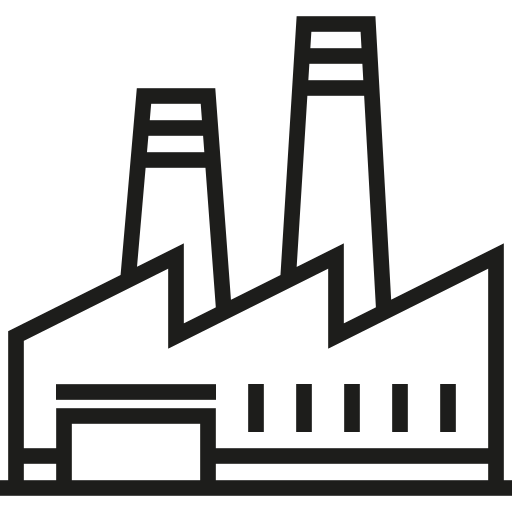

Desenvolver infraestrutura de qualidade, confiável, sustentável e resiliente, incluindo infraestrutura regional e transfronteiriça, para apoiar o desenvolvimento econômico e o bem-estar humano, com foco no acesso equitativo e a preços acessíveis para todos
Meta 2

Promover a industrialização inclusiva e sustentável e, até 2030, aumentar significativamente a participação da indústria no setor de emprego e no PIB, de acordo com as circunstâncias nacionais, e dobrar sua participação nos países menos desenvolvidos
Meta 3
Aumentar o acesso das pequenas indústrias e outras empresas, particularmente em países em desenvolvimento, aos serviços financeiros, incluindo crédito acessível e sua integração em cadeias de valor e mercados
Meta 4
Até 2030, modernizar a infraestrutura e reabilitar as indústrias para torná-las sustentáveis, com eficiência aumentada no uso de recursos e maior adoção de tecnologias e processos industriais limpos e ambientalmente corretos; com todos os países atuando de acordo com suas respectivas capacidades
Meta 5
Fortalecer a pesquisa científica, melhorar as capacidades tecnológicas de setores industriais em todos os países, particularmente os países em desenvolvimento, inclusive, até 2030, incentivando a inovação e aumentando substancialmente o número de trabalhadores de pesquisa e desenvolvimento por milhão de pessoas e os gastos público e privado em pesquisa e desenvolvimentos
Uso de tecnologia sustentável no cotidiano
O uso de tecnologias e inovações sustentáveis compoe os Objetivos de Desenvolvimento Sustentável (ODS) da ONU. Que trata de avanços tecnológicos que busquem o progresso e a harmonia com o meio-ambiente, de forma que este não seja prejudicado com o avanço. As grandes tecnologias que ameaçam o meio ambiente são, em grande parte, inacessíveis ao cidadão comum, no entanto, a substituição de algumas práticas por apetrechos tecnológicos pode contribuir individualmente para a diminuição do consumo de materiais que ameaçam o meio-ambiente. Por exemplo, a automatização doméstica é um processo que, gradualmente, insere-se na casa de todo brasileiro. Uma combinação de aparelhos pode ser sustentável. Por exemplo, uma assistente virtual pode economizar boas páginas de agendas/planners. Uma smart-lamp tem o consumo bem menor do que as tradicionais lâmpadas incandescentes, e conta com uma autonomia maior. Tomadas smart podem auxiliar no gerenciamento de energia, e evitar gastos excessíveis. Todos esses benefícios somam-se com a praticidade de ter o controle de todos eles no bolso, ou até mesmo por voz, além de muitas outras funcionalidades!
E como a tecnologia está influenciando nos empregos?
É evidente que, com todo o progresso tecnológico iminente, as relações trabalhistas serão modificadas, e muitas profissões e profissionais irão, necessáriamente, se adaptar. Profissões podem deixar de existir e outras surgirem. Baseado nisso, uma importante pesquisa encomendada pela Dell Technologies, para o Institute for the Future (IFTF) revela que 85% dos trabalhos que existirão em 2030 ainda não foram inventados. Isso significa que, dos trabalhos, da forma como você conhece agora, apenas 15% permanecerão. Empresas que investem na imersão digital sairão na frente, pois a tecnologia domina cada vez mais profundamente as relações trabalhistas, as profissões e a dinâmica do trabalho. Segundo a pesquisa da Dell, apenas 27% têm o digital enraizado em tudo o que fazem. A maioria (57%) das empresas estão lutando para acompanhar o ritmo de mudança e 93% estão lutando contra alguma forma de barreira para se tornar um negócio digital de sucesso em 2030 e além. Além disso, cada vez mais há empresas investindo no digital, seja em funcionalidades, automações ou até marketing digital. É urgente a necessidade de que profissionais saibam manipular dados e programar softwares para acompanhar o processo evolutivo da nova indústria. Criatividade e interpessoalidade serão atributos cada vez mais desejáveis, pois ainda estão longe de serem alcançados por dispositivos, mas serão conciliados aos aparelhos emergentes.
E por falar em soft skills...
“Habilidades como resiliência, empatia, colaboração e comunicação são todas competências baseadas na inteligência emocional e que distinguem profissionais incríveis da média”, afirma Daniel Goleman, psicólogo expert no assunto e autor do bestseller Inteligência Emocional.
As soft skills têm grande potencial de serem o diferencial entre os profissionais no futuro, assim como são no presente. Com a vinda da automatização, as soft skills poderão ser o que manterá diversos empregos, são habilidades que uma máquina ainda está distante de ter, mesmo com inteligência artificial. Segundo Daniel Goleman, jovens não dão a devida importância ao valor da inteligência emocional no ambiente de trabalho, mas as habilidades que ela envolve são cruciais para ter foco, motivação e colaborar de maneira produtiva. Pensando nisso, o site "napratica.org.br" desenvolveu um vídeo sobre como adquirir soft skills e se diferenciar entre os demais.
Mas e as automações?
Muitos profissionais, desde a 2ª revolução industrial, estão sendo substituídos por máquinas. Quem sentiu isso fortemente foram os trabalhadores rurais, quando se viram substituídos por máquinas agrícolas. Entretando, agora a substituição pode vir pelo software, que é mais acessível do que máquinas e equipamentos. Uma das profissões que se vê em "perigo" devido à falta de atualização e adaptação é a do advogado. Especificamente no campo do Direito, o conhecimento jurídico está cada vez mais acessível às pessoas, em função do rápido e fácil compartilhamento das informações, por todo o mundo, propiciadas pela criação e expansão da internet. E com isso, uma profissão relacionada ao meio jurídico foi criada, a do Engenheiro Jurídico, que, basicamente, consiste na fusão entre o programador e o advogado. Este busca soluções por meio da computação e programação para as demandas que o mundo jurídico clama. Motoristas podem ser substituídos por carros autônomos, assim como os que estão em teste pela empresa Uber, que já implementou estes nas ruas dos EUA. Mas automações não vieram apenas para substituir empregados, vieram para somar e facilitar trabalhos, assim como no século 18, máquinas a vapor e de fabricação de tecido reinventaram a forma de se fazer comércio. Na segunda metade do século 19, a incorporação da energia elétrica às fábricas acelerou e barateou processos produtivos. E atualmente as automações reinvetam e modificam profissões. Podemos citar, inclusive, a profissão do programador. Atualmente, não é uma profissão que se encontra em risco, mas com o desenvolvimento de tecnologias como o GPT-3 e os próprios bots que os programadores fazem para facilitar o próprio trabalho, os futuros dev's podem contar com um trabalho facilitado, com o auxílio da própria criação e isso tudo compõe a pauta de Inovação proposta pela ODS 9. Confira o vídeo ao lado.
E como isso tudo auxilia com o desenvolvimento sustentável?
O uso de automações via software, inteligência artificial pode propor uma solução muito boa para os países emergentes, que carecem de mão de obra especializada. De que forma?
Esses artifícios podem facilitar os meios educacionais de muitos países, levando conhecimento de qualquer lugar do mundo, com equipamentos que podem ser acessíveis principalmente para alunos de escolas com estruturas precárias, propiciando um ensino com maior qualidade e evitando gastos e consumos de materiais como papel. Além disso, utilizar automações tecnológicas em países emergentes abre espaço para áreas pouco exploradas nos países, que serão inseridas já com o auxílio da tecnologia, que, principalmente, é aliada no combate ao desperdício, por ter muitos componentes eletrônicos e virtuais. Além disso, criar uma economia baseada em tecnologia diminui a exploração de recursos naturais como petróleo, floresta e alguns minérios. Podemos ver isso pensando nos carros elétricos, podendo citar os da Tesla, que estão bem avançados e com um preço competitivo. Esses carros dispensam o uso de gasolina ou diesel ou etanol, que contribuem para a poluição do ar. E, nesse aspecto, o uso de tecnologia pode dispensar muitos trabalhos mecânicos, substituindo máquinas em indústrias, que também eliminam poluentes no ar e/ou na água. A tecnologia também é uma aliada na diminuição de perdas, evitando o descarte e aumentando o reaproveitamento por meio das energias renováveis.
Opiniões
Para falar um pouco mais do assunto, consultei Kelvin Moreira, Bacharel em Ciência e Tecnologia, Discente de Engenharia Aeroespacial com Ênfase em Modelagem e Simulação Computacional e Discente do Programa de Pós-Graduação em Eng. Mecânica - Universidade Federal do ABC.
“A tecnologia pode promover a sustentabilidade ao passo que ela torna nossos processos mais eficientes. As tecnologias fazem com que nossos processos fiquem mais eficientes de duas formas: 1- Consumir menos recursos 2- Utilizar fontes de recursos alternativos aos naturais
O que acontece: a taxa de reposição de recursos sintéticos é muito maior devido a nossa capacidade industrial, a depender da tecnologia ela pode tornar nossos processos eficientes consumindo menos recursos, consumindo os sintéticos e produzindo-os. Portanto, a indústria pode suprir os recursos sintéticos, mesmo que nem sempre eles podem substituir os naturais. Os recursos naturais são "finitos" pois sua taxa de reposição é bem menor.”
-Kelvin Moreira
Economia circular, uma solução?
Em frente aos desafios do desenvolvimento sustentável, além das alternativas tecnológicas, surge também a tese da economia circular, que consiste numa reutilização da matéria-prima dos produtos, resultando volatividade no preço das matérias-primas, novas relações com o cliente, competitividade na economia e conservação do capital natural. A Economia Circular mantém o valor acrescentado nos produtos pelo maior tempo possível e elimina o desperdício.
João Pedro Franco Bittar, 18 anos, moro em Itabuna-BA e conhecido desde os 8-9 anos como menino do computador pela família e pelos professores com dificuldades em colocar slide.
Comecei com o interesse em tecnologia muito cedo, desde quando o computador da minha avó dava problema e eu via o técnico mexendo. Achava fascinante.
Desde então, meu desenvolvimento inteiro, da infância até os dias atuais, foi ao lado da tecnologia, dos computadores, sempre o utilizando a meu favor. Com 9-10 anos eu abri um canal no youtube de jogos e tutoriais, e nessa época comecei a aprender a usar o Photoshop, hoje faço serviços como Designer Freelancer e, devido a isso, quis avançar pro mundo do desenvolvimento web, web design e etc. A JA Brasil está me proporcionando um incentivo para ir ao próximo nível na minha área, me apresentando um ótimo conteúdo com um suporte excelente. Agradeço imensagemente a eles pela oportunidade de estar sendo apresentado a mais conhecimento e numa área que eu admiro tanto!